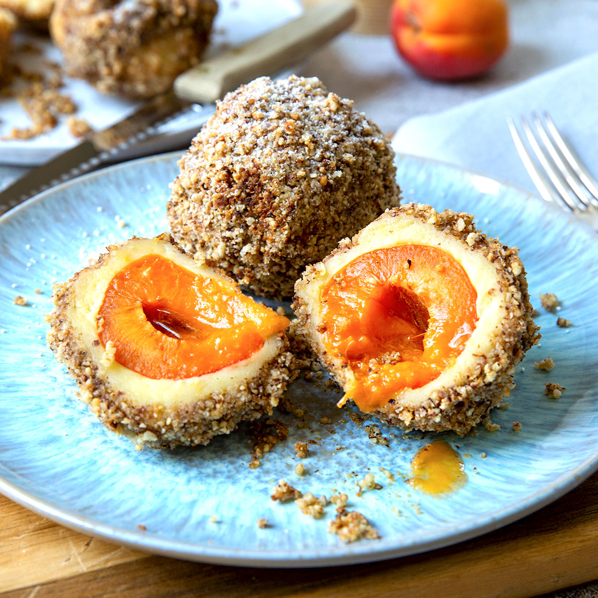

Monday: Apricot Dumplings

Description
This is a great recipe for all the lovers of sweet cuisine amongst you.
The dough contains lots of delicious potatoes, inside the dumplings you find some sweet and fruity apricots.
The perfect meal for hot summer days, when you desire something fresh and sweet for lunch.
Can also be served as a dessert.
Ingredients
- 1 kg potatoes
- 2 tablespoons of butter
- 250g flour
- 2 eggs
- a pinch of salt
- apricots
- sugar cubes
Steps
- Cook the potatoes, peel them while they are still hot and squeeze them through the potato-squeezer.
- Mix them with the other ingredients as long as they are warm.
- Form a roll with the dough and cut down pieces for the dumplings.
- Put one pitted apricot filled with one sugar cube on each piece of dough and form the dumplings.
- Put the dumplings in boiling water with a pinch of salt in it.
- Turn down the heat but keep the water slightly boiling.
- When done, serve with a butter-sugar-crumb mixture and enjoy.
More recipes
Previous -- Home -- Next